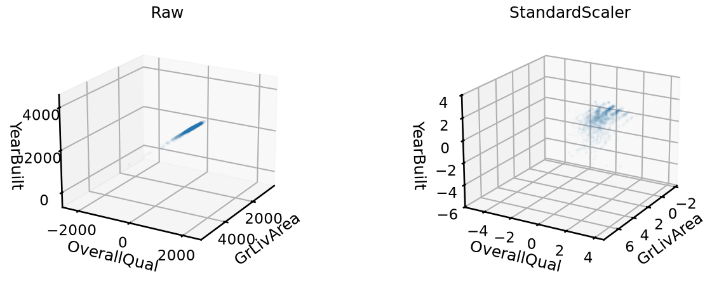
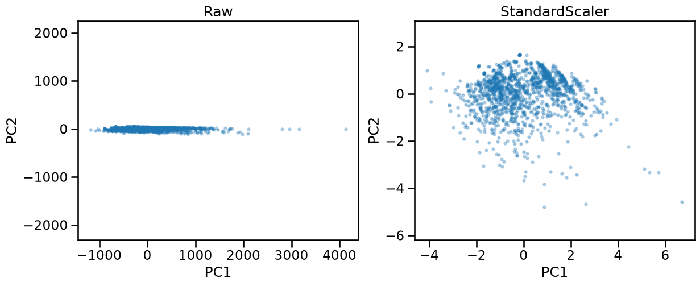
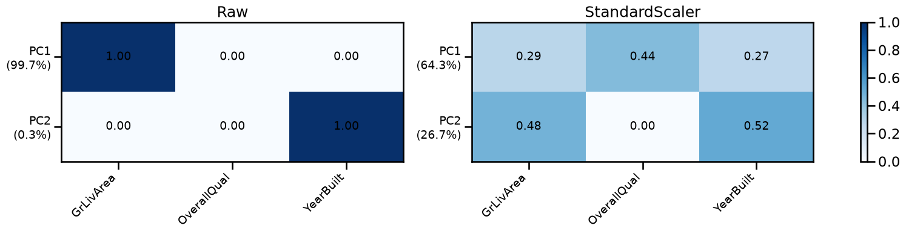
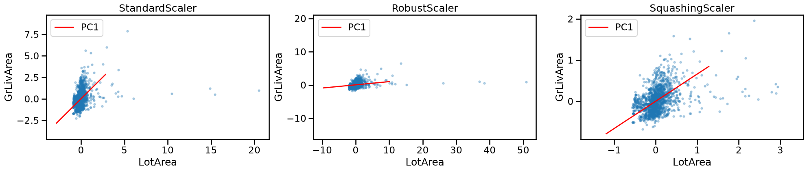
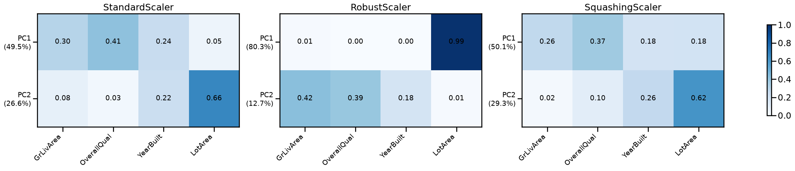
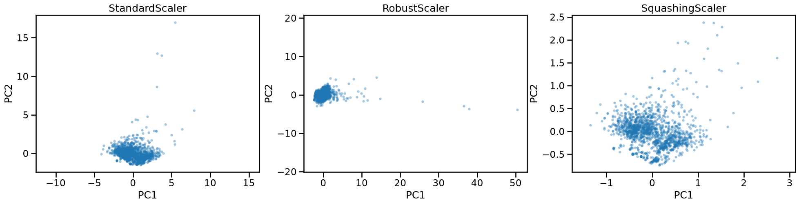
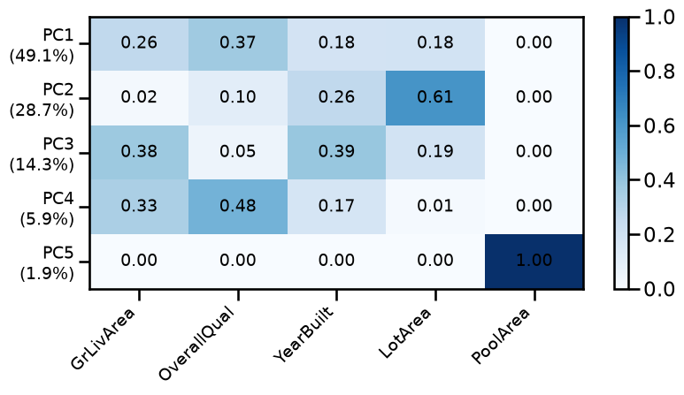
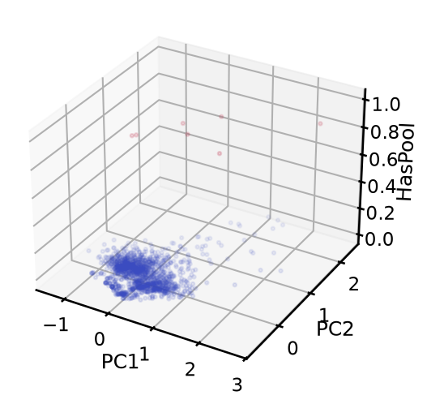
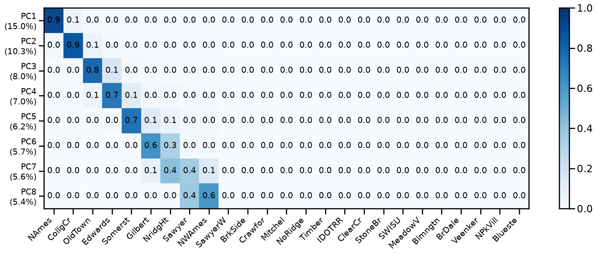
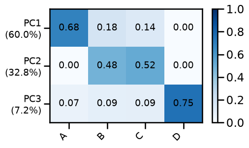

Preprocessing for PCA#
In the previous notebook we applied PCA directly to two features in the same units, but that is rarely the case. At this point we have insisted that several machine learning algorithms require the features to be in the same scale, and PCA is one of them. Intuitively, if one feature spans a much larger range than another, its variance is also measured on that larger scale and dominates the decomposition, regardless of whether it carries more useful information.
Scaling fixes that problem, but how do we chose a scaling technique? Different features have different distributions. Different distribution shapes interact with scaling in a different way, and that interaction has a direct effect on PCA.
We will also learn in this notebook how heatmaps can be used to see at a glance how much each original feature contributes to each principal component, and watch that picture change as we vary the preprocessing.
Here we focus on a small set of features of the Ames Housing dataset. We don’t need to, but we drop the target column “SalePrice” as a reminder that PCA is an unsupervised learning method.
import pandas as pd
data = pd.read_csv("../datasets/ames_housing_no_missing.csv")
data = data.drop(columns="SalePrice")
data
| MSSubClass | MSZoning | LotFrontage | LotArea | Street | Alley | LotShape | LandContour | Utilities | LotConfig | ... | ScreenPorch | PoolArea | PoolQC | Fence | MiscFeature | MiscVal | MoSold | YrSold | SaleType | SaleCondition | |
|---|---|---|---|---|---|---|---|---|---|---|---|---|---|---|---|---|---|---|---|---|---|
| 0 | 60 | RL | 65.0 | 8450 | Pave | Grvl | Reg | Lvl | AllPub | Inside | ... | 0 | 0 | Gd | MnPrv | Shed | 0 | 2 | 2008 | WD | Normal |
| 1 | 20 | RL | 80.0 | 9600 | Pave | Grvl | Reg | Lvl | AllPub | FR2 | ... | 0 | 0 | Gd | MnPrv | Shed | 0 | 5 | 2007 | WD | Normal |
| 2 | 60 | RL | 68.0 | 11250 | Pave | Grvl | IR1 | Lvl | AllPub | Inside | ... | 0 | 0 | Gd | MnPrv | Shed | 0 | 9 | 2008 | WD | Normal |
| 3 | 70 | RL | 60.0 | 9550 | Pave | Grvl | IR1 | Lvl | AllPub | Corner | ... | 0 | 0 | Gd | MnPrv | Shed | 0 | 2 | 2006 | WD | Abnorml |
| 4 | 60 | RL | 84.0 | 14260 | Pave | Grvl | IR1 | Lvl | AllPub | FR2 | ... | 0 | 0 | Gd | MnPrv | Shed | 0 | 12 | 2008 | WD | Normal |
| ... | ... | ... | ... | ... | ... | ... | ... | ... | ... | ... | ... | ... | ... | ... | ... | ... | ... | ... | ... | ... | ... |
| 1455 | 60 | RL | 62.0 | 7917 | Pave | Grvl | Reg | Lvl | AllPub | Inside | ... | 0 | 0 | Gd | MnPrv | Shed | 0 | 8 | 2007 | WD | Normal |
| 1456 | 20 | RL | 85.0 | 13175 | Pave | Grvl | Reg | Lvl | AllPub | Inside | ... | 0 | 0 | Gd | MnPrv | Shed | 0 | 2 | 2010 | WD | Normal |
| 1457 | 70 | RL | 66.0 | 9042 | Pave | Grvl | Reg | Lvl | AllPub | Inside | ... | 0 | 0 | Gd | GdPrv | Shed | 2500 | 5 | 2010 | WD | Normal |
| 1458 | 20 | RL | 68.0 | 9717 | Pave | Grvl | Reg | Lvl | AllPub | Inside | ... | 0 | 0 | Gd | MnPrv | Shed | 0 | 4 | 2010 | WD | Normal |
| 1459 | 20 | RL | 75.0 | 9937 | Pave | Grvl | Reg | Lvl | AllPub | Inside | ... | 0 | 0 | Gd | MnPrv | Shed | 0 | 6 | 2008 | WD | Normal |
1460 rows × 79 columns
Need for scaling#
We start with three features: GrLivArea (above-grade living area in sq ft,
roughly 300 to 5,000), OverallQual (quality score from 1 to 10), and
YearBuilt (year of construction, roughly 1870 to 2010). Their raw scales
differ by factors of hundreds.
We start by plotting the three features in a 3D scatter, before and after
standardization. To make the scale problem visible, the axes must be drawn at
equal scale. The helper function set_equal_3d_axes below does this by
computing the common range across all three axes and applying it uniformly.
import numpy as np
import matplotlib.pyplot as plt
from sklearn.decomposition import PCA
from sklearn.preprocessing import StandardScaler
from sklearn.pipeline import make_pipeline
features_3d = ["GrLivArea", "OverallQual", "YearBuilt"]
X_3D = data[features_3d]
standard_scaler = StandardScaler().set_output(transform="pandas")
def set_equal_3d_axes(ax, X):
ranges = X.max(axis=0) - X.min(axis=0)
max_range = ranges.max() / 2
mids = (X.max(axis=0) + X.min(axis=0)) / 2
ax.set_xlim(mids.iloc[0] - max_range, mids.iloc[0] + max_range)
ax.set_ylim(mids.iloc[1] - max_range, mids.iloc[1] + max_range)
ax.set_zlim(mids.iloc[2] - max_range, mids.iloc[2] + max_range)
ax.set_xlabel(features_3d[0], labelpad=8)
ax.set_ylabel(features_3d[1], labelpad=8)
ax.set_zlabel(features_3d[2], labelpad=8)
fig, axes = plt.subplots(
1, 2, figsize=(15, 5), subplot_kw={"projection": "3d"}
)
for ax, title in zip(axes, ("Raw", "StandardScaler")):
X_t = X_3D if title == "Raw" else standard_scaler.fit_transform(X_3D)
ax.scatter(
X_t["GrLivArea"], X_t["OverallQual"], X_t["YearBuilt"], alpha=0.2, s=5
)
set_equal_3d_axes(ax, X_t)
ax.set_title(title)
ax.view_init(elev=20, azim=30)
plt.show()

In the raw plot, the cloud is essentially a straight line: OverallQual and
YearBuilt span so little compared to GrLivArea that their axes are nearly
invisible at equal scale. PCA on raw data would dedicate PC1 almost entirely
to GrLivArea.
After scaling, the cloud fills the cube more evenly. All three features contribute visible spread, and the structure between them becomes apparent.
We now project the three features down to 2D using n_components=2, with and
without scaling. Here we don’t need a helper function, we can directly set
ax.axis("equal").
pca_2d = PCA(n_components=2)
fig, axes = plt.subplots(1, 2, figsize=(14, 5))
for ax, (title, pipe) in zip(
axes,
[
("Raw", pca_2d),
("StandardScaler", make_pipeline(StandardScaler(), pca_2d)),
],
):
X_pc = pipe.fit_transform(X_3D)
ax.scatter(X_pc[:, 0], X_pc[:, 1], alpha=0.3, s=10)
ax.set_xlabel("PC1")
ax.set_ylabel("PC2")
ax.set_title(title)
ax.axis("equal")
plt.show()

Without scaling, PC1 captures almost all the variance of GrLivArea alone.
The projected cloud is nearly one-dimensional: all houses line up along PC1,
and PC2 carries almost nothing. The two directions PCA found correspond
roughly to “how big is the living area” and a small residual.
After scaling, the projected cloud uses both axes more evenly. PCA found directions that reflect the combined structure of all three features, not just the one with the largest raw variance. The overall shape looks different because the two pipelines found genuinely different directions in the original space, not just a rescaled version of the same projection.
To see exactly which original features each PC captures, we can read the
components_ attribute. It is a an array of shape (n_components, n_features). Each entry of the array is the cosine of the angle between the
axis of an original feature and one PC direction. That is, a value close to 0
means the PC is nearly perpendicular to the original feature axis, whereas a value
close to 1 or -1 means the PC runs nearly parallel to that feature axis. The
sign has no absolute meaning, it just reflects an arbitrary orientation choice
that PCA makes internally.
To remove that ambiguity and get a value that reads as a proportion, we can
square each entry of components_, which we call a “loading”. Because each
row of components_ is a unit vector, the squared values in a row sum
exactly to 1. A squared loading of 0.9 can be then interpreted as 90% of the
PC direction coming from that feature.
We can use a heatmap to visualize the squared loadings, with and without scaling, side by side. Once again we define a helper function to plot the heatmap.
def plot_sq_loadings(ax, pca, feature_names, col_order=None, decimals=2):
if col_order is not None:
components = pca.components_[:, col_order]
feature_names = [feature_names[i] for i in col_order]
else:
components = pca.components_
sq_loadings = components**2
im = ax.imshow(sq_loadings, cmap="Blues", vmin=0, vmax=1, aspect="auto")
for i, j in np.ndindex(sq_loadings.shape):
ax.text(
j,
i,
f"{sq_loadings[i, j]:.{decimals}f}",
ha="center",
va="center",
fontsize=14,
)
ax.set_xticks(range(len(feature_names)))
ax.set_xticklabels(feature_names, rotation=45, ha="right", fontsize=14)
ax.set_yticks(range(len(components)))
ax.set_yticklabels(
[
f"PC{i + 1}\n({v:.1%})"
for i, v in enumerate(pca.explained_variance_ratio_)
],
fontsize=14,
)
return im
fig, axes = plt.subplots(1, 2, figsize=(20, 3))
for ax, (title, pipe) in zip(
axes,
[
("Raw", make_pipeline(pca_2d)),
("StandardScaler", make_pipeline(StandardScaler(), pca_2d)),
],
):
pipe.fit(X_3D)
im = plot_sq_loadings(ax, pipe[-1], features_3d)
ax.set_title(title)
fig.colorbar(im, ax=axes)
plt.show()

Without scaling, PC1 has a squared loading close to 1.0 on GrLivArea and
close to 0 on the other two features. It is almost entirely a GrLivArea
component, which corresponds to the intuition we had from the previous scatter
plot. PC2 then captures whatever small residual variance remains, which turns
out to be mostly YearBuilt. OverallQual barely appears in either component
because its raw range (1–10) is tiny compared to the other two features.
After scaling, the squared loadings are distributed more evenly across
features. All original features contribute substantially to PC1, and the
explained_variance_ratio_ is also better distributed among components.
Choice of a scaling technique#
Looking at the heatmap after scaling, you might wonder if the loadings being
evenly distributed is just a consequence of StandardScaler giving every
feature unit variance. Does that mean all features contribute more or less
equally to every component? Not quite. Each feature axis has unit variance,
yes. But PCA looks for directions in the joint space of all features. The
variance along a diagonal direction depends on how much the features correlate
with each other. Two strongly correlated features will jointly define a
direction with much higher variance than either one alone, and the explained
variance ratios across components will still be very unequal. Scaling removes
the magnitude bias; it does not make all directions equally important.
There is a subtler issue too. StandardScaler estimates the standard
deviation from all samples, including outliers. LotArea (lot size in sq
ft) is a good example, as most lots sit around 10,000 sq ft, but some of them
largely exceed that surface. Those extreme values inflate the estimated
standard deviation, so after dividing by it, the outliers are moderated but
not eliminated. They can still pull PC1 slightly away from the main data
cloud.
We can make a plot of the first PC after transforming LotArea and
GrLivArea with three different scalers. RobustScaler scales by the
interquartile range (IQR) rather than using the standard deviation, so the
scale estimate is less affected by outliers. SquashingScaler from the
skrub library applies a sigmoid-like compression that maps values beyond a
chosen quantile range toward the center, reducing the influence of extreme
values more aggressively.
Each plot is shown in its own scaler’s coordinate space, so each PC1 line is a fair description of what PCA computed in that space.
from sklearn.preprocessing import RobustScaler
from skrub import SquashingScaler
X_lots = data[["LotArea", "GrLivArea"]]
squashing_scaler = SquashingScaler(quantile_range=(5.0, 95.0))
pipelines = [
("StandardScaler", make_pipeline(StandardScaler(), pca_2d)),
("RobustScaler", make_pipeline(RobustScaler(), pca_2d)),
("SquashingScaler", make_pipeline(squashing_scaler, pca_2d)),
]
fig, axes = plt.subplots(1, 3, figsize=(24, 4))
for ax, (title, pipe) in zip(axes, pipelines):
pipe.fit(X_lots)
X_t = pipe[:-1].transform(X_lots)
v = pipe[-1].components_[0]
center = X_t.mean(axis=0)
scale = X_t[:, 0].std() * 4
pts = np.array([center - scale * v, center + scale * v])
ax.scatter(X_t[:, 0], X_t[:, 1], alpha=0.3, s=10)
ax.plot(pts[:, 0], pts[:, 1], linewidth=2, color="red", label="PC1")
ax.set_title(title)
ax.legend(loc="upper left")
ax.set_xlabel("LotArea")
ax.set_ylabel("GrLivArea")
ax.axis("equal")
plt.show()

In the StandardScaler panel, the outliers appear at roughly 5–20 standard
deviations along the “LotArea” axis. The inflated standard deviation has
partially absorbed their extremity, and PC1 runs diagonally, capturing the
positive correlation. The outliers tilt it slightly toward horizontal
but do not dominate, because there are only a handful of them among 1,400
houses.
In the RobustScaler panel, the same outliers now sit at 20–50 IQR units to
the right. This may appear counterintuitive, but as “LotArea” has a heavily
skewed distribution, its IQR is much smaller than its standard deviation.
lot = data["LotArea"]
q1, q3 = lot.quantile(0.25), lot.quantile(0.75)
iqr = q3 - q1
print(f"std: {lot.std():.0f} sq ft")
print(f"IQR: {iqr:.0f} sq ft (Q1={q1:.0f}, Q3={q3:.0f})")
std: 9981 sq ft
IQR: 4048 sq ft (Q1=7554, Q3=11602)
Dividing by the smaller number makes the outliers relatively more extreme than
they were when using a StandardScaler. PC1 is nearly horizontal as a result.
“Robust” here refers to the median and IQR being less affected by extreme
values than the mean and the standard deviation. But a narrow IQR pushes the
outliers further out rather than pulling them in.
In the SquashingScaler panel, the nonlinear compression maps the extreme
lots back into a range comparable to the rest of the data. The bulk of the
cloud fills the plot more evenly, and PC1 aligns with the elongated diagonal
of the main cloud. This is the most faithful representation of the
relationship between the two features for a typical house.
Now let’s compare the effect of the different scalers when using all four
features together, ["LotArea", "GrLivArea", "OverallQual", "YearBuilt"], and
then using PCA with 2 components.
features_4d = features_3d + ["LotArea"]
X_4D = data[features_4d]
pipelines_4 = [
("StandardScaler", make_pipeline(StandardScaler(), pca_2d)),
("RobustScaler", make_pipeline(RobustScaler(), pca_2d)),
("SquashingScaler", make_pipeline(squashing_scaler, pca_2d)),
]
fig, axes = plt.subplots(1, 3, sharex=True, figsize=(30, 4))
for ax, (title, pipe) in zip(axes, pipelines_4):
pipe.fit(X_4D)
sq_loadings = pipe[-1].components_ ** 2
im = plot_sq_loadings(ax, pipe[-1], features_4d)
ax.set_title(title)
fig.colorbar(im, ax=axes, shrink=0.8)
plt.show()

Using StandardScaler, PC1 is dominated by OverallQual and GrLivArea,
with YearBuilt contributing moderately; while LotArea plays almost no role
in PC1 but dominates PC2. The outlier lots do inflate the standard deviation
of LotArea, but their influence on the joint decomposition is modest because
they are outnumbered by the inliers.
With RobustScaler, LotArea dominates PC1 almost entirely. The small IQR
makes the outlier lots extremely large in scaled units, so PCA dedicates most
of its first direction to separating them from the rest of the data. The other
three features are pushed into PC2.
With SquashingScaler, the loadings are spread more evenly across all four
features. PC1 captures a mix of size and quality, and PC2 picks up the
remaining variation. This is the most informative decomposition of the four
features as a whole.
Note
Even with domain expertise, assigning meaning to components is not always straightforward, since components are in general a mixture of all original features.
We can compare the effect of the different scalers, but now in the PC space.
Once again we are careful to set ax.axis("equal").
fig, axes = plt.subplots(1, 3, figsize=(24, 5))
for ax, (title, pipe) in zip(axes, pipelines_4):
X_pc = pipe.fit_transform(X_4D)
ax.scatter(X_pc[:, 0], X_pc[:, 1], alpha=0.3, s=10)
ax.set_xlabel("PC1")
ax.set_ylabel("PC2")
ax.set_title(title)
ax.axis("equal")
plt.show()

Under StandardScaler, the cloud is somewhat compact and the outliers in
“LotArea”, are mostly aligned with the PC2 axis, but the variance carried by
the dominant PC is not heavily influenced by their large values. This confirms
the intuitions obtained by the previous heatmap.
Under RobustScaler, the projection is stretched along PC1 by the outlier
lots. A small number of points sit far to the right, and the bulk of the data
is compressed around low values. Most of the variance is carried solely by
PC1.
Under SquashingScaler, the cloud uses both axes more evenly. There are no
isolated extreme points, and the shape of the distribution reflects the
genuine variation in house size, quality, and age rather than a few anomalous
lots.
Scaling sparse features#
PoolArea records pool surface area in square feet. About 97% of houses in
Ames have no pool, so the column is almost entirely zeros.
data["PoolArea"].value_counts()
PoolArea
0 1453
512 1
648 1
576 1
555 1
480 1
519 1
738 1
Name: count, dtype: int64
A feature that is zero for most samples but large for a few introduces a
concentrated spike of variance. PCA may then dedicate an entire component to
separating that small group. As we saw with LotArea, StandardScaler
moderates this effect while RobustScaler amplifies it. SquashingScaler
compresses extreme values back toward the bulk of the data, which is why we
would expect it to be the least likely to let a sparse feature hijack a
component.
Let’s verify using a heat map.
features_5d = features_4d + ["PoolArea"]
X_5d = data[features_5d]
pipe_pool = make_pipeline(squashing_scaler, PCA(n_components=5))
pipe_pool.fit(X_5d)
fig, ax = plt.subplots(figsize=(9, 4))
im = plot_sq_loadings(ax, pipe_pool[-1], features_5d)
fig.colorbar(im, ax=ax)
plt.show()

“PoolArea” loads entirely on the last component, PC5, which explains a negligible fraction of the total variance. The other four features dominate the first four components and contribute nothing to PC5.
Any dimensionality reduction, even keeping 4 components, would discard PC5 and with it all the information about pool presence. Yet for the ~50 houses that have a pool, this feature may be genuinely predictive of price.
The issue is that “PoolArea” is really encoding two things at once: whether a house has a pool at all, and how large it is. The binary part is lost entirely when PCA pushes it into a negligible component.
A better approach could be to separate these two signals by creating a binary “HasPool” feature from “PoolArea” and exclude “PoolArea” from the PCA input. Then, we can concatenate “HasPool” directly to the PCA output and use the combined representation in a downstream model.
from sklearn.preprocessing import Binarizer
from sklearn.compose import ColumnTransformer
ct = ColumnTransformer(
[
("pca", make_pipeline(squashing_scaler, pca_2d), features_4d),
("pool", Binarizer(), ["PoolArea"]),
]
)
ct.set_output(transform="pandas")
ColumnTransformer(transformers=[('pca',
Pipeline(steps=[('squashingscaler',
SquashingScaler(quantile_range=(5.0,
95.0))),
('pca', PCA(n_components=2))]),
['GrLivArea', 'OverallQual', 'YearBuilt',
'LotArea']),
('pool', Binarizer(), ['PoolArea'])])In a Jupyter environment, please rerun this cell to show the HTML representation or trust the notebook. On GitHub, the HTML representation is unable to render, please try loading this page with nbviewer.org.
Parameters
['GrLivArea', 'OverallQual', 'YearBuilt', 'LotArea']
Parameters
Parameters
['PoolArea']
Parameters
X_final = ct.fit_transform(X_5d)
X_final
| pca__pca0 | pca__pca1 | pool__PoolArea | |
|---|---|---|---|
| 0 | 0.297390 | -0.321014 | 0 |
| 1 | -0.086678 | -0.067111 | 0 |
| 2 | 0.397532 | -0.147387 | 0 |
| 3 | -0.071222 | 0.226889 | 0 |
| 4 | 0.760872 | -0.017473 | 0 |
| ... | ... | ... | ... |
| 1455 | 0.091172 | -0.254469 | 0 |
| 1456 | 0.287335 | 0.192718 | 0 |
| 1457 | 0.223479 | 0.113570 | 0 |
| 1458 | -0.413962 | 0.148152 | 0 |
| 1459 | -0.281315 | 0.092592 | 0 |
1460 rows × 3 columns
pc1, pc2, has_pool = X_final.columns
fig, ax = plt.subplots(figsize=(7, 6), subplot_kw={"projection": "3d"})
ax.scatter(
X_final[pc1],
X_final[pc2],
X_final[has_pool],
c=X_final[has_pool],
cmap="coolwarm",
alpha=0.4,
s=10,
)
ax.set_xlabel("PC1")
ax.set_ylabel("PC2")
ax.set_zlabel("HasPool")
plt.show()

The final matrix has 3 columns: 2 principal components capturing the continuous variation in size, quality, and age, plus 1 binary column for pool presence. The binary feature is preserved exactly rather than being diluted into a near-zero component.
This pattern generalises: any binary or categorical feature is better kept outside the PCA input and concatenated to the output. Putting it inside PCA forces a continuous decomposition onto a discrete structure, which rarely works well, as we will see in the following section.
One-hot encoding and PCA#
We have seen that one-hot encoding produces one binary column per category (each column is 1 for the houses that belong to that given category, and 0 otherwise). We could feel tempted to use PCA to reduce the resulting feature space after one-hot encoding.
Consider what this means for PCA. A column that is 1 for 40% of houses varies a lot: it separates a large group from the rest. A column that is 1 for 2% of houses barely varies. That is what we observed for “PoolArea”: it is 0 for 97% of houses, so PCA pushes it into the last component. Binarizing it into “HasPool” does not change this, since a binary feature that is 1 for only 3% of houses barely varies and would meet the same fate. That is why we kept it outside the PCA pipeline entirely.
Furthermore, the columns are mutually exclusive: exactly one column is 1 per row, all others are 0. This means they are all negatively related to each other, and PCA picks up those relationships too. The result is that each component reflects a mix of categories rather than a clean contrast between two, making the components hard to interpret.
To demonstrate this, let’s focus on the “Neighborhood” feature, which has 25 unique categories:
len(data["Neighborhood"].unique())
25
We then use PCA with 8 components to reduce the 25-dimensional space resulting after one-hot encoding. In this case we display the squared loading heatmap with neighborhoods sorted by descending frequency.
from sklearn.preprocessing import OneHotEncoder
pipe_ohe = make_pipeline(
OneHotEncoder(sparse_output=False), PCA(n_components=8)
)
pipe_ohe.fit(data[["Neighborhood"]])
categories = pipe_ohe[0].categories_[0]
freq_order = data["Neighborhood"].value_counts(normalize=True)
sorted_idx = np.searchsorted(categories, freq_order.index)
fig, ax = plt.subplots(figsize=(18, 6))
im = plot_sq_loadings(
ax, pipe_ohe[-1], categories, col_order=sorted_idx, decimals=1
)
fig.colorbar(im, ax=ax)
plt.show()

The heatmap shows that early components load heavily on the columns toward the left, which are the most frequent neighborhoods. The first component is dominated by “NAmes” (the most common neighborhood); the second, by “CollgCr”, which is the second most frequent; and so on. Rare neighborhoods, on the right side of the heatmap, would appear only in later components with near-zero explained variance.
The practical consequence is that the dimensionality reduction after OHE is not much different than dropping the rarest categories, regardless of how predictive those neighborhoods might actually be.
We do observe some mixing, the heatmap is not perfectly diagonal because the values in the encoded categories are related to each other, as mentioned before. Indeed, PC8 is no longer dominated by the 8th most frequent category.
In general, categories with similar frequencies tend to get mixed into the same components, while categories with clearly distinct frequencies each dominate their own component.
rng = np.random.default_rng(0)
n = 1000
categories = rng.choice(
["A", "B", "C", "D"], size=n, p=[0.60, 0.19, 0.18, 0.03]
).reshape(-1, 1)
pipe_ohe = make_pipeline(
OneHotEncoder(sparse_output=False), PCA(n_components=3)
)
pipe_ohe.fit(categories)
fig, ax = plt.subplots(figsize=(5, 3))
im = plot_sq_loadings(ax, pipe_ohe[-1], ["A", "B", "C", "D"])
fig.colorbar(im, ax=ax)
plt.show()

Key Takeaways#
In this notebook you learned that scaling is not a formality you apply once and forget. The distribution of each feature determines how it behaves after scaling, and that shapes the PC space.
A standard scaler works well for roughly symmetric features, but inflates the effect of outliers, as extreme values stretch the estimated spread.
A robust scaler protects the scale estimate from outliers, but can make those same outliers even more extreme for highly skewed distributions.
A nonlinear scaler like
SquashingScalercompresses the tails directly, which often produces the most interpretable components when outliers are present.
As always, the best practice depends on the use case and domain knowledge. For instance, if you are building an outlier detection pipeline, you may want outliers to remain visible in the PC space rather than compressing them away.
The other side of the coin is that PCA can itself be a diagnostic tool. The heatmaps of squared loadings revealed things about the data that were not obvious from the raw values: which features co-vary, which ones are dominated by a few extreme houses, and which categorical encoding produces components that reflect frequency rather than meaning. Running PCA and inspecting what it finds is a reasonable step in any exploratory analysis, even if you end up not using the components in a deployed model.